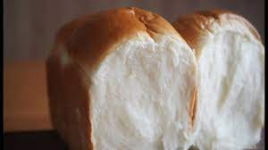

Milk Bread
Home
Credit:Umi's baking

Gorgeous Fluffy Brown Milk Bread
Steps:
- For the Tangzhong, mix 40g bread flour with 200g water in a saute pan. Turn on medium heat and keep stirring until mixture thickens to a paste.
- Refrigerate for 6 hours. Bring out to room temperature 1 hour before use.
- Add bread flour, sugar, salt, dry yeast, powdered milk to a mixing bowl and mix gently with dough hook attachment.
- At low speed, mix in milk and egg and Tangzhong so that no flour is visible.
- Add in room temperature unsalted butter and mix at low speed.
- Slowly turn up the speed to high and mix until all dough sticks together.
- Take the dough and fold it around and underneath itself shaping a smooth ball. Place dough in a bowl, cover with plastic wrap, and let it rest for 40 minutes to an hour.
- Test the dough by poking your finger down into the middle. If the dough does not spring back, it is ready.
- Divide the dough into 6 equal parts (by weight). Take one piece of dough and fold it over itself. Turn it 90 degrees, slap it on table and fold it over itself again. Using both hands, mold the dough into a ball. Repeat with rest of dough. Cover with plastic wrap and let it rest for 15 minutes.
- Roll each ball of dough out flat. Fold flatten dough using thirds. Turn 90 degrees, and roll dough into a roll, pinching it together at the seam. Place 3 molded dough into a baking pan and let it rest for 30 minutes, letting it rise.
- Brush with egg wash and bake in the oven, preheated to 355°F for 25-30 minutes.
Ingredients
- Tangzhong:
- 40g bread flour
- 200g water
- 580g bread flour
- 60g sugar
- 12g salt
- 10g dry yeast
- 10g dry milk
- 260g milk
- 50g egg
- Tangzhong:
- 50g room temperature of unsalted butter
- egg wash (1 egg yolk + milk)